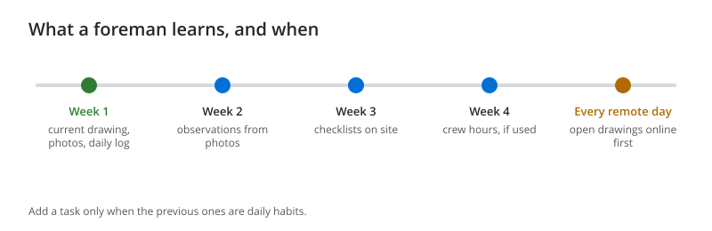

Bringing your field crew on board
In one sentence: the crew needs three things on day one (find the current drawing, take located photos, fill the daily log) and everything else can wait until those are habits.

Week 1: three tasks
- Open the current drawing and find a sheet by number.
- Take photos in the app so they land in the project, with a location.
- Fill the daily log: manpower, equipment, notes, delays. See The Daily Log and Caltrans daily reports.
Weeks 2 to 4
- Create an observation or punch item from a photo.
- Fill a checklist (trench, pull box, pre-pour).
- Enter crew hours in Timesheets if you use it. See Timesheets, crew hours and certified payroll.
Working with poor signal
Freeway shoulders, tunnels and remote cabinets often have no signal. According to Procore's help pages, the mobile app keeps items you viewed while online and lets you create many items offline; they sync when the connection returns. So:
- Before leaving for a remote site, open the drawings, specs and checklists you'll need.
- Don't delete and reinstall the app in the field: Procore notes that you lose cached items.
- Check that the day's entries synced before the end of the shift.
Making it stick
- One owner per crew for the daily log, every day, before leaving the site.
- The PM reads the log every morning and answers. Crews keep filling a log someone reads.
- Short, phone-sized checklists. Long ones get skipped.
- Use the information: when a daily log entry wins a change order, tell the crew.
Devices
Company phones or tablets with enough storage for the drawing set, a rugged case and a charger in every truck.
In Procore's own help
Using the mobile app offline. Procore's help pages are the reference for how each screen works today.
Common mistakes
- Training foremen on every tool in one afternoon.
- Filling the week's logs on Friday from memory.
- Going offline without opening the drawings first.